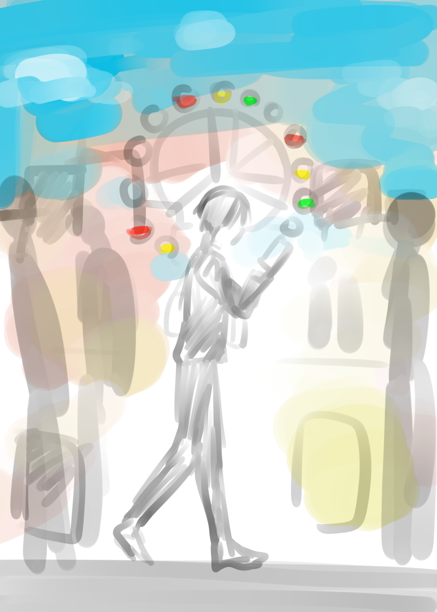

「道徳、とは」
演出スキップ→
【美野 わたる】
Yoshino Wataru
情動の振れ幅が極めて小さい青年。 空虚だがどこまでも道徳的に正しい行いができる人間。その優しさは心からではなく、日本教育の道徳の「正解」からきている。
出身：日本
身分：一般市民
肩書：高校生
TIMELINE / BACKBONE
僕は道徳のテストの点数が良かった。 けれど、心や道徳がなんであるかはいまも分からないままだ。 それでも、僕のしていることは正解なんだと思う。なぜなら道徳のテストで○を貰えるから。